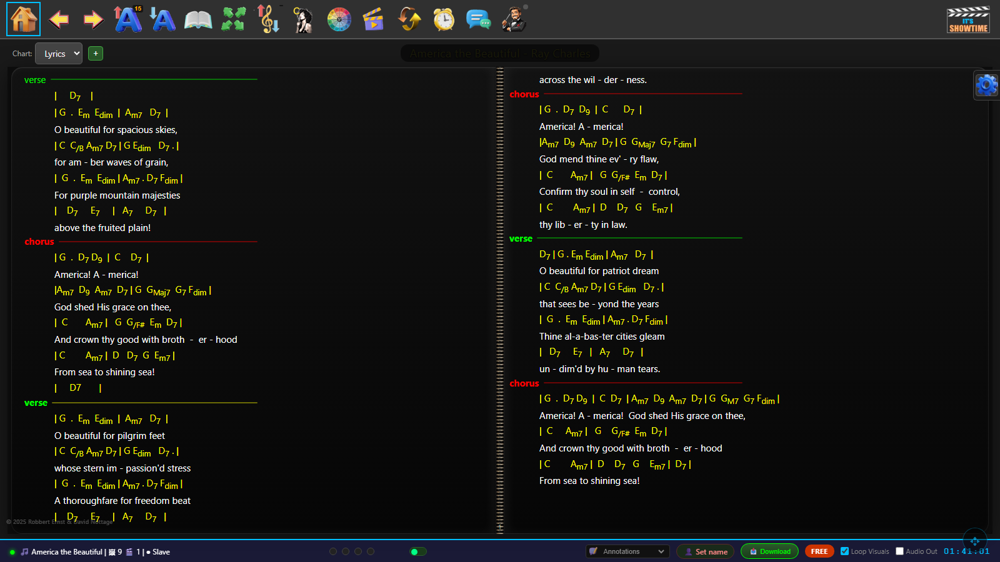

This is the real ShowTime interface. Follow the glowing dot on the nav pad — press the arrow it points to. We'll find and load a song first, then you can roam the whole toolbar. Use your arrow keys, the on-screen pad, or click — just like the foot-pedal or touchscreen you'd use at a gig.

← → to move along the toolbar, ↑ ↓ to press the highlighted icon.